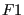

In this routine the different matrices are constructed. What has to be set up is summarized in the logicals mass, stiffness, buckling, rhsi and stiffonly. For instance, if the mass matrix must be calculated, mass=true, else mass=false. Notice that mass and stiffonly are defined as vectors of length 2. The first entry applies to mechanical calculations, the second entry to thermal calculations. If mass(1)=true the mass matrix for mechanical calculations or the mechanical part of coupled temperature-displacement calculations is determined and similarly, if mass(2)=true the specific heat matrix for thermal calculations or the thermal part of coupled temperature-displacement calculations is determined. This distinction is necessary to account for differences between mechanical and thermal calculations. It suffices to calculate the mass matrix in mechanical calculations only once, whereas the outspoken dependence of the specific heat on temperature requires the calculation of the specific heat matrix in each iteration. In what follows the mechanical stiffness matrix and thermal conductivity matrix will be simply called the stiffness matrix, the mechanical mass matrix and thermal heat capacity matrix will be called the mass matrix.
The routine consists of two major loops over all elements. The first loop constructs the mechanical part of the matrices, if applicable, the second loop constructs the thermal part, if applicable. Each loop runs over all elements, thereby collecting the element stiffness matrix and/or mass matrix from routine e_c3d and e_c3d_th for mechanical and thermal calculations, respectively, and inserting them into the global stiffness matrix and/or mass matrix, taking into account any linear multiple point constraints. The right-hand side matrices are also constructed from the element right-hand sides and any point loading.
To compose the element stiffness matrices the material stiffness matrices ( ) in the integration points of the elements are needed. These are recovered from storage from the last call to subroutine results.f. For the mass matrices the density and/or specific heat in the integration points is needed. These quantities are obtained by interpolation in the appropriate temperature range. No other material data need to be interpolated.